基本信息：
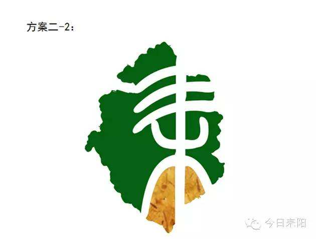
耒阳，湖南省辖县级市，由衡阳市代管，位于衡阳市南部，五岭山脉北面，东北邻安仁县，东南及南面连永兴县，西南角与桂阳县接壤，西临舂陵水与常宁市隔河相望，北界衡南县。地处衡阳盆地南缘向五岭山脉地过渡地段，地形较为复杂。下辖5乡19镇6街道，总面积2656平方公里。2018年常住人口112.79万人。
耒阳为中国四大发明之首造纸术发明家蔡伦的故乡，具有2200多年的历史，因地处耒水北岸而得名。同时，耒阳市也被誉为中国油茶之乡。2015年9月，耒阳市成为湖南国土资源省直管县经济体制改革试点县（市）。2019年3月6日，被列入第一批革命文物保护利用片区分县。
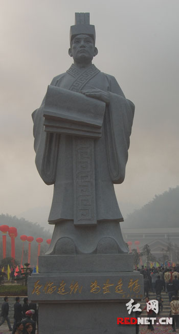
历史文化：
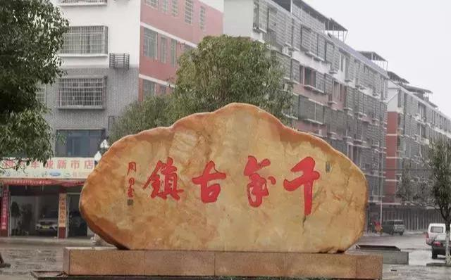
耒阳建置很早，在夏商属荆州，战国时属楚。秦始皇二十六年（前221年）置耒县，因耒水而命名，隶长沙郡。
西汉高祖五年（前202年），以其治位耒水之北，更名耒阳县，隶属桂阳郡。
王莽新朝开凤元年（14年），改耒阳县为南平亭，隶南平郡（桂阳郡改）。
东汉建武年间（25～26年），废南平亭，复耒阳为县，隶桂阳郡，属荆州刺史部。东汉献帝建安十三年（208年），“刘豫州”据荆州，取桂阳，耒隶之。蜀汉（222年）隶桂阳郡，属荆州刺史。章武二年（222年）八月荆襄属吴，耒阳仍隶桂阳郡。吴孙亮（252～258年）析县地为新宁、新平、梨阳、耒阳四县，耒阳属桂阳郡。
西晋（256～316年）耒阳仍隶桂阳郡，初属湘州，复属荆州。改梨阳县为利阳县，仍属湘东郡。东晋孝武帝太元二十年（395年），撤利阳并入耒阳，隶桂阳郡，属江洲。
南北朝时，南朝宋、齐至梁天正元年（420～551年），耒阳县隶桂阳郡，属湘州。梁元帝时（552～554年），迁耒阳县治于列敖山口，改隶湘东郡，上属湘洲。陈朝未变。
隋文帝开皇九年（589年）平陈，耒阳县更为涞阴县，以其治位于耒阳水之阴也（水之东为阴），置衡洲，县属之。
唐武德四年（621年），复名耒阳县，治所迁回汉晋故治，隶衡州。贞观元年（627年）起，上属江南道。昭宗乾宁三年（896年）马殷据潭州，称楚王，衡州俱系统属，耒属焉，历梁、唐、晋、汉，凡五十六年，皆马殷地。
南唐保大九年（951年）李璟时，刘仁瞻取岳州，命边镐自袁州取长沙而楚天，十年（952年）武平节度使周行逢取潭州，子保叔嗣衡洲刺史，而耒阳属南唐，名仍旧。
宋朝，改名为来阳县，隶衡州衡阳郡，属荆湖南路安抚司。
元世祖至元年十九年（1282年），因耒阳民众繁富，升为州，直隶湖广行省湖南道宣尉司。
明洪武三年（1370年）三月，耒阳因遭兵灾，人口骤减，复降为县，隶衡州府，属湖广政使司。
清朝仍为耒阳县，隶衡州府，属衡东郴桂道（初为衡永郴道）。
民国三年（1914年），改衡永郴桂道为衡阳道，耒阳隶衡阳道，属湖南省。
民国十一年（1922年），废道存省，耒阳县隶湖南省。
民国二十六年（1937年）12月，湖南省分置9个行政督察区。耒阳县隶湖南省第五行政督察区。
民国二十九年（1940年）4月，将全省改划为十个行政督察区，耒阳县隶湖南省第二行政督察区。
民国三十三年（1944年）7月3日，日军侵占耒阳城，县政府迁上堡街（今属黄市镇），后迁严塘铺（今属大义乡）。
民国三十四年（1945年）8月15日，日本宣布无条件投降，9月15日境内日军缴械，耒阳光复，县政府迁回县城。
1949年10月7日，耒阳解放，12月成立县人民政府，隶衡阳专区。
1952年11月，衡阳、郴县、零陵三专署合并成立湘南行署（行署驻衡阳），耒阳隶湘南行政区。
1954年7月，撤销湘南行署，改设衡阳、郴县两个专署，耒阳隶郴县专区（1960年改名为郴州专区，1979年更名为郴州地区）。
1983年7月1日，回归衡阳市。
1986年11月，经国务院批准，耒阳县升格为县级耒阳市，隶属衡阳市。以原城关镇为市区。
1989年3月，撤销城关、灶市2镇，设置蔡子池、水东江、灶市3个街道办事处，将三架乡的五里牌村、梅桥村划归蔡子池街道办事处管辖，三架乡的锡里村民委员会21个村民小组、余庆乡的联平村民委员会11个村民小组划归灶市街道办事处管辖。
2006年3月经衡阳市人民政府批准，设置五里牌街道办事处，4月21日正式挂牌成立。办事处总面积29平方公里，人口5.3万人，
2010年8月12日成立三顺街道办事处，辖1个居委会、6个建制村，总面积26.56平方公里，总人口1.5万人，办事处机关驻三顺村。
2015年9月，成为湖南国土资源省直管县经济体制改革试点县（市）。
历史名人:
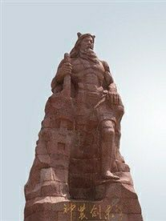
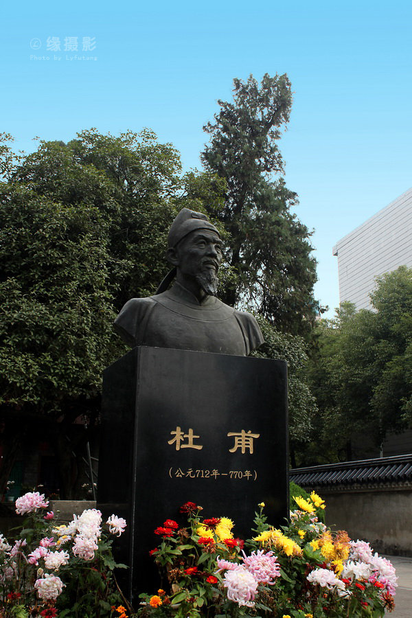
神农:神农(Shennong，公元前3245年-公元前3080年)，即炎帝，踞今5500年至6000年前生于历山(今湖北随州市境内)，中国远古传说中的太阳神。姜姓，号神农氏，中国上古人物，有文字记载的出现时代在战国以后。被世人尊称为"药祖"、"五谷先帝"、"神农大帝"、"地皇"等。华夏太古三皇之一，传说中的农业和医药的发明者，他遍尝百草，有"神农尝百草"的传说，教人医疗与农耕，掌管医药及农业的神只，能保佑农业收成、人民健康，更被医馆、药行视为守护神。
杜甫:杜甫（公元712年-公元770年），字子美，自号少陵野老。汉族，祖籍襄阳，河南巩县（今河南省巩义）人。唐代伟大的现实主义诗人，与李白合称“李杜”。为了与另两位诗人李商隐与杜牧即“小李杜”区别，杜甫与李白又合称“大李杜”，杜甫也常被称为"老杜"。杜甫在中国古典诗歌中的影响非常深远，被后人称为“诗圣”，他的诗被称为"诗史"。后世称其杜拾遗、杜工部，也称他杜少陵、杜草堂。
蔡伦:蔡伦(?-121)字敬仲，东汉桂阳郡人。汉明帝永平末年入宫给事，章和二年(公元88年)，蔡伦因有功于太后而升为中常侍，蔡伦又以位尊九卿之身兼任尚方令 。蔡伦总结以往人们的造纸经验革新造纸工艺，终于制成了“蔡侯纸”。元兴元年(公元105年)奏报朝廷 ，汉和帝下令推广他的造纸法 。建光元年(公元121年)，因权力斗争自杀身亡 。
当地高校：
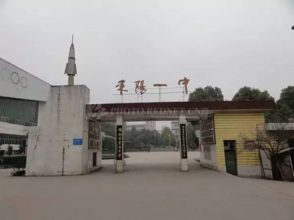
耒阳一中：耒阳市第一中学(Leiyang No.1 Middle School)坐落在湖南省衡阳市耒阳市马埠山下，耒水河畔。是湖南省示范性普通高级中学，被教育部确定为全国百所特色高中项目学校。
耒阳市第一中学前身是杜陵书院(公元907年)，于1902年创办新学，名为耒阳县立第一高等小学堂。1941年，学校升为耒阳县立初级中学。1958年8月，学校升为耒阳县第一中学。1986年，随耒阳市更名为耒阳市第一中学。
据2017年6月学校官网显示，耒阳一中有校园面积50000平方米，建筑面积70000平方米，绿化面积达40%。学校有90个教学班级，学生5600余人，教职工416人。
据2017年6月学校官网信息显示，耒阳一中规划有教学区、生活区、运动区，区域内现代教育技术装备齐全。图书馆藏书10万余册，并设有电子视听阅览室，体艺馆有音乐、美术教学设备，是2003年全国篮球甲B联赛的主赛场。
据2017年6月学校官网信息显示，耒阳一中有教职工416人，其中特级教师4人，2人享受国务院津贴，高级教师88人，有全国优秀教师4人，全国模范教师1人，国家级骨干教师7人，省级骨干教师4人，省级优秀教师16人，耒阳市优秀班主任4人，市骨干教师10人，市"四有教师"师德标兵4人，市级学科带头人和后备学科带头人24人。
耒阳二中：耒阳市第二中学创办于1924年，其前身为湖南私立广湘初级中学，1999年挂牌为湖南省重点中学，是耒阳市第一所省级重点中学。
多年来，学校坚持"全员发展，全面发展，特长发展，和谐发展"的办学理念，不断深化教育改革，形成了"系统构筑、整体推进的德育特色;夯实基础、发展特长的教学特色;分层推进、异步发展的师训特色;课题带动、点面结合的教研特色"。
湖南省耒阳市第二中学创办于1924年，1999年挂牌为湖南省重点中学，是耒阳市第二所省级重点中学。2004年挂牌为湖南省示范性普通高级中学，是湖南省现代教育技术示范校、湖南省体育传统项目学校、湖南省首批教育科学学科研究基地。
学校先后荣获"全国贯彻《学校体育工作条例》优秀学校"、"湖南省德育整体改革先进单位"、"湖南省未成年人教育工作先进单位"、"湖南省教研教改先进单位"、"湖南省百佳文明卫生单位"、"湖南省绿色学校"等40余项省部级荣誉称号。教学质量稳步提高，多次被评为"衡阳市高中教学质量优胜单位"。2002年-2008年学生参加各种学科竞赛共有841人次获奖，其中国家级161人次，省级132人次;教师参加各级教学比赛共有65人次获奖，其中省级一等奖和特等奖达14人次;教师发表论文301篇，获奖论文756篇，共完成研究省级以上教研课题14项，仅"十五"期间就有《德育校本课程开发与实施》、《基于网络环境的计算机导思教学法》、《大语文阅读探索》三个省级课题分别荣获省级优秀教研教改成果一等奖。
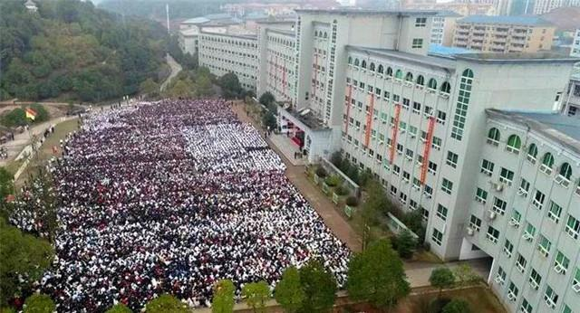
耒阳市正源学校:耒阳市正源学校是湖南省"深洽会"招商引资的签约项目，由深圳耒阳籍实业家梁晓斌先生投资创办，原耒阳二中高中教师现神风公司总经理罗湘云先生参股并负责全面工作，是一所经教育行政部门批准的集幼儿园、小学、初中、高中于一体的民办学校。首期投资4000万元，已建成可容纳200个教学班的教学生活的全部设施。目前全校师生高达17000余人。
正源学校将西方现代的教育理念和模式与中国优秀的文化传统相结合，将中式的"打好基础"与美式的"培养创造力"相结合，实施"扬长教育"，在学生基本素质整体协调发展的基础上，突出创新能力的培养，使学生在学好文化课程的同时，真正发挥自己的个性特长。在认真贯彻教育方针，全面实施国家基础教育课程计划的同时，小学、初中阶段将突出音体美教学及英语口语、武术、书法和古文教学的特色;高中阶段着力为高校输送更多更优秀的人才。
继2006年高考二本以上上线97人、上线率60%遥居全市第一之后，正源学校2007年高考再创奇迹:294人参考，二本以上上线202人，上线率69%。其中文科参考人数75人，二本以上上线46人(含一本13人)，上线率61.3%。文科总分600分以上2人，徐慨同学以622分夺得耒阳市文科状元。理科参考人数183人，二本以上上线144人(含一本59人)，上线率79%。理科总分600分以上4人，熊娜同学630分位居耒阳市理科第四名，刘阳同学620分位居耒阳市理科第七名。体艺类参考人数36人，专业、文化成绩上中央美院、广州美院等名校12人。
旅游景点：
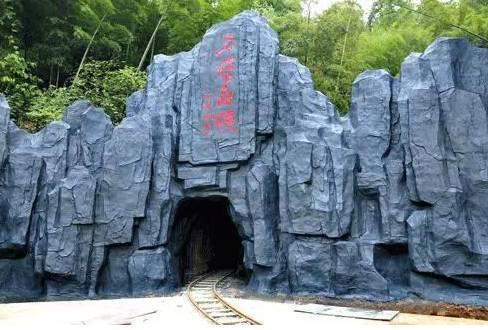
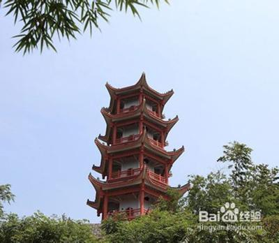
蔡伦竹海
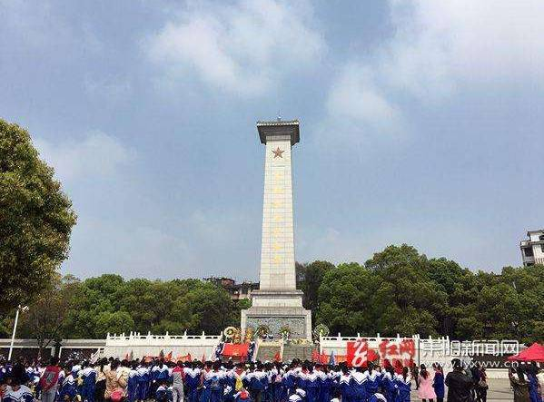
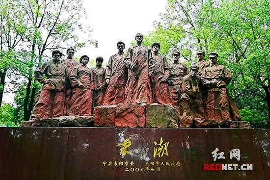
烈士陵园
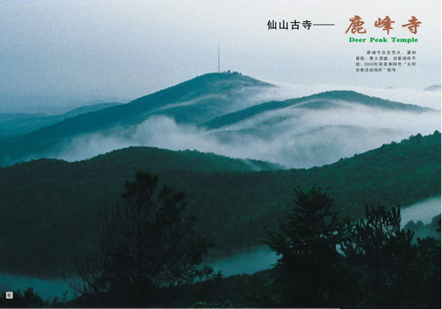
鹿歧峰
当地美食：
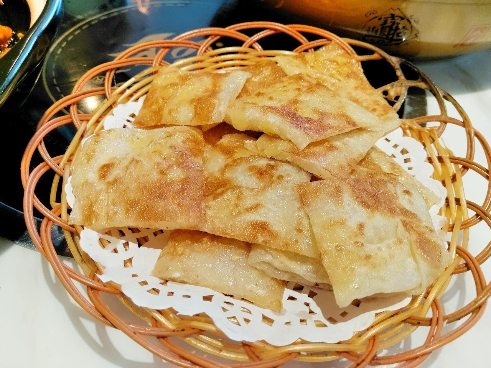
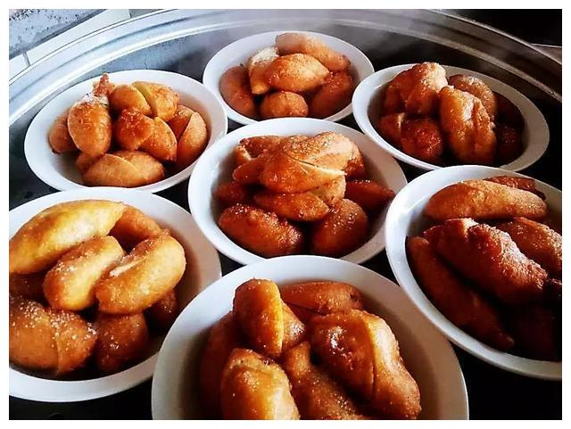